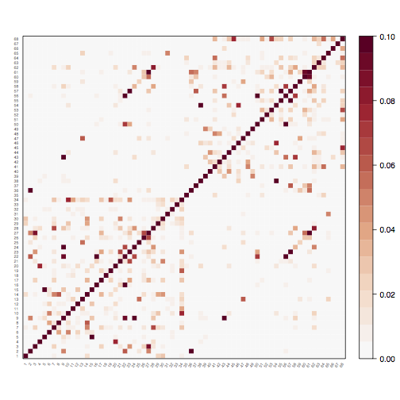
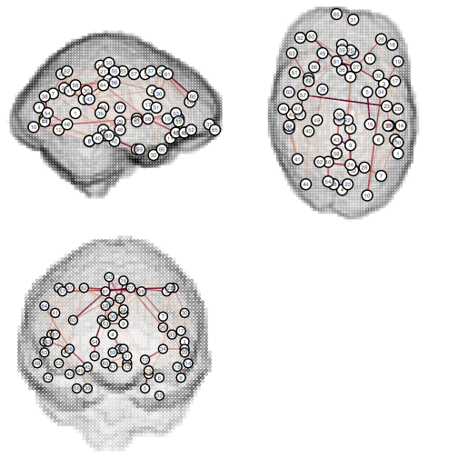

| Home | Contents | Downloads | Changelog | References | Mailing list |
Connectivity graphs
This page discusses TractoR’s facilities for creating, manipulating and visualising abstract graphs representing brain connectivity. Some parcellated structural data is a prerequisite.
Creating a graph (diffusion)
Using diffusion-weighted data and tractography, a graph can be created which represents streamline-based connectivity between regions of interest. The general principle is to seed within regions of interest, or across the whole brain; identify sets of streamlines which connect pairs of anatomical regions; and then (optionally) to use properties of these streamlines to derive a quantitative measure of region-to-region connectivity. In TractoR, these three tasks would usually be performed by the track, graph-build and graph-reweight scripts.
To generate a set of streamlines, each of which passes through at least two target regions of interest, we can use the track script. For example,
tractor track /data/subject1 white_matter TargetRegions:cerebral_cortex TerminateAtTargets:true MinTargetHits:2 Streamlines:100x RequireMap:false RequirePaths:true
In this case we seed 100 streamlines from every voxel labelled as white matter in the parcellation. In this case the target regions are all areas identified as cerebral cortex in the parcellation lookup table. Other targets, such as subcortical grey matter, can also be included by adding region names or region types to the TargetRegions option.
A set of streamlines is generated by this script and, by default, written into the file “tract.trk”. An auxiliary file, “tract.trkl”, is also created to store information about target hits for each streamline. These can then be used to create a graph using a command like
tractor graph-build /data/subject1 TractName:tract TargetRegions:cerebral_cortex GraphName:diffusion_graph
The “TargetRegions” and “TractName” options should match what were used for track.
At this point you have a binary graph in which an edge exists between each pair of regions connected by at least one streamline. Each edge has attributes like the average voxelwise FA along the streamlines or the number of streamlines constituting the connection, and vertices have attributes such as their volume. These can be used to assign weights to the edges if required. For example,
tractor graph-reweight diffusion_graph nStreamlines
will use the number of streamlines as the weight of the connection. Vertex attributes can also be used, but since there are two such values for each connection, you need to decide how to merge them. For example,
tractor graph-reweight diffusion_graph "nStreamlines/voxelCount" VertexAttributes:mean
will average the two vertex attributes for each edge, and then use the number of streamlines divided by the average voxel count in the two target regions as the weight.
Creating a graph (BOLD fMRI)
Resting-state fMRI data may be used to establish functional connectivity, or the degree of correlation in activity between spatially separated cortical areas. Although TractoR does not currently provide scripts for preprocessing functional data—SPM and FSL-FEAT are two well-known software tools that could be used for this purpose—it does allow already preprocessed data to be imported and used to create functional connectivity graphs.
To get the data into a session directory, the import script can be used:
tractor import /data/subject1 fmri.nii.gz ImageWeighting:functional
Creating a functional connectivity graph then requires three stages, namely
- propagating a cortical parcellation from structural to functional space;
- identifying a representative signal trace for each parcellated region of interest; and
- calculating covariance measures between each pair of regional traces.
The graph-build script can be used to perform these tasks. Stage 1, the transformation, is performed implicitly. Stage 2 is controlled by the “RegionTimeSeries” option, which may be “mean” for the mean of the voxelwise time series, or “pc” for the first principal component, which will capture more of the variance within the region but is less standard. At the third stage, several measures of association are calculated, but if the number of time points is modest it can be useful to employ a “shrinkage” approach that TractoR offers (via the corpcor R package), which regularises the estimates. For example,
tractor graph-build /data/subject1 Type:functional UseShrinkage:true GraphName:functional_graph
The resulting binary graph than then be weighted by correlation, say, by using the command
tractor graph-reweight functional_graph correlation
Graph properties
The basic properties of a graph object can be obtained using the generic peek script, viz.
tractor peek graph.Rdata
However additional graph-theoretical metrics can be calculated and displayed using the graph-props script:
tractor graph-props graph.Rdata
Graph visualisation
The graph-viz script can be used to visualise graphs, either as an association matrix or in traditional topological form.
tractor graph-viz graph MatrixView:true WeightLimits:0,0.1

tractor graph-viz graph MatrixView:false UseLocations:true ShowBrain:true WeightLimits:0,0.1

Graph decomposition
For many applications you may be interested subnetworks within the overall brain graph, rather than the entire graph as a whole. You could determine these subnetworks by hand, but TractoR also provides some data-driven approaches to factoring or partitioning a graph into parts. The techniques currently offered are principal network analysis and a modularity maximisation partitioning algorithm. Both of these are accessible through the graph-decompose script. For example,
tractor graph-decompose graph Method:principal-networks EdgeWeightThreshold:0.2
The principal networks approach uses a matrix factoring approach akin to principal component analysis, while modularity maximisation tries to separate the graph into subnetworks whose overall modularity is maximised. These and other approaches to graph decomposition, their strengths and weaknesses, are discussed in the principal networks paper. Either way, the result is a file called “graph_decomposed.Rdata”, which contains a series of smaller graphs. This file can be split into its parts using the split script, viz.
tractor split graph_decomposed.Rdata
The individual graphs can then be visualised, or their graph properties calculated, as needed.